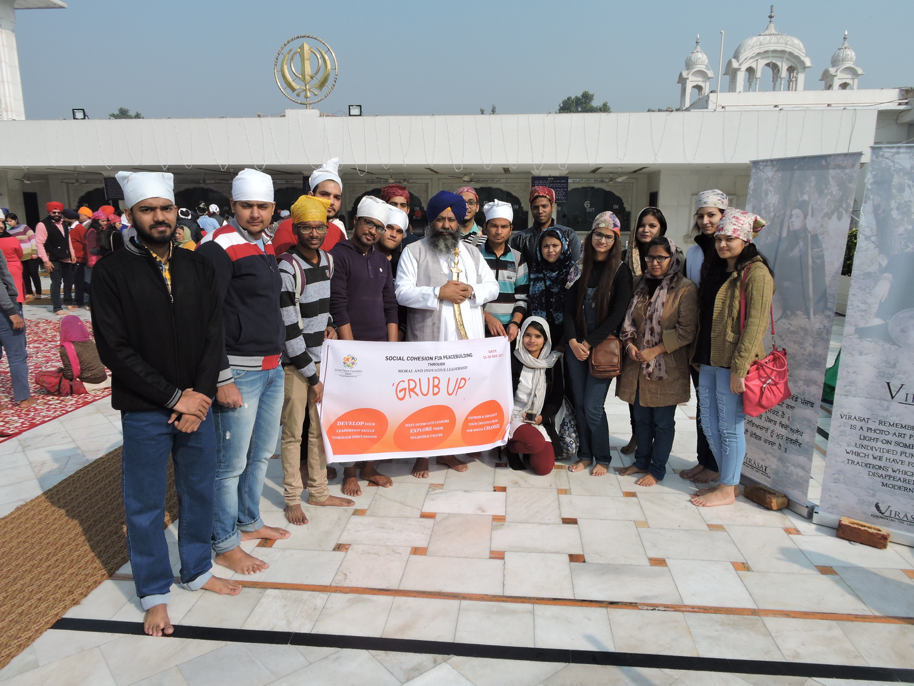
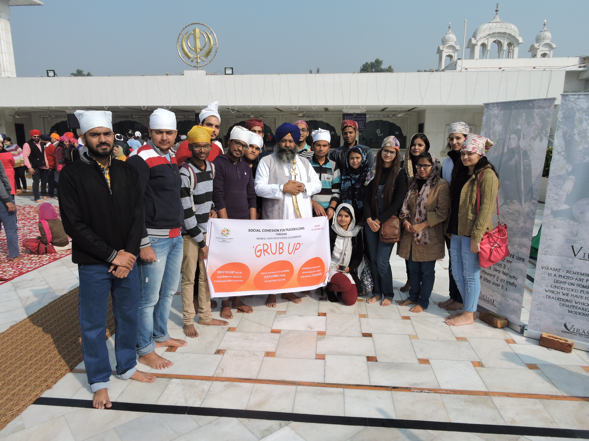
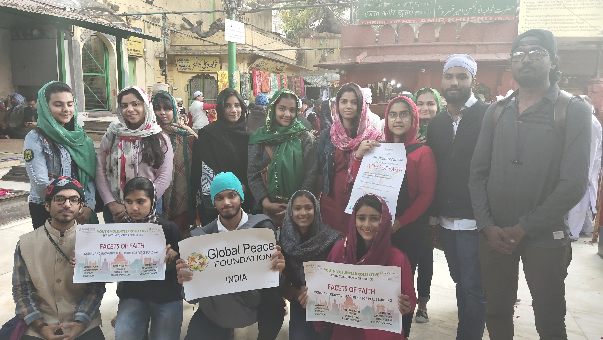
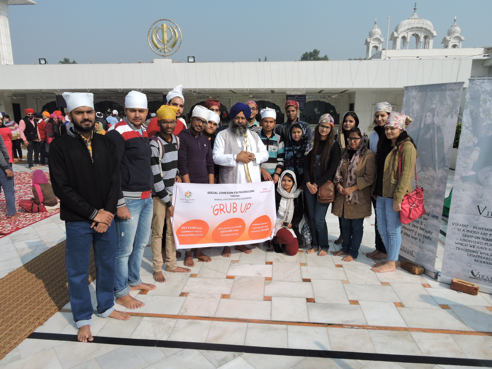
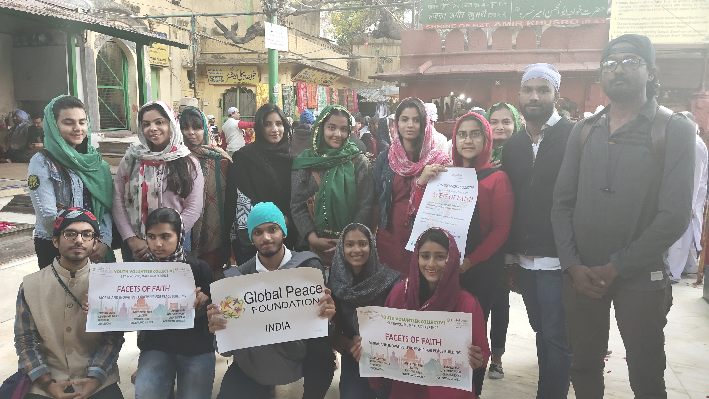
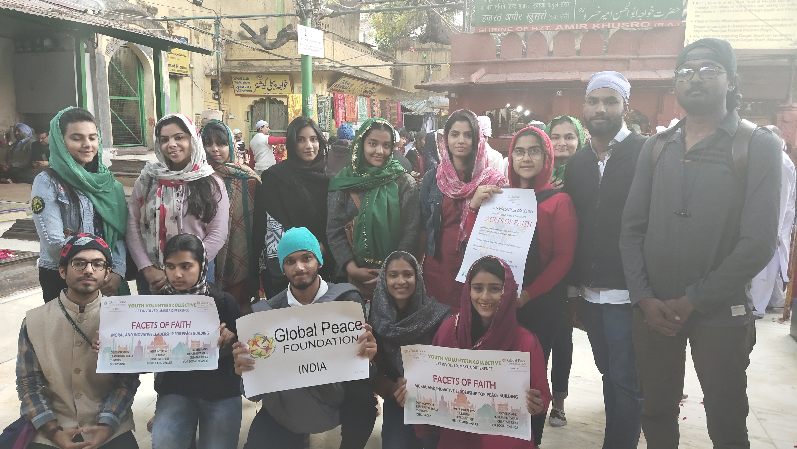
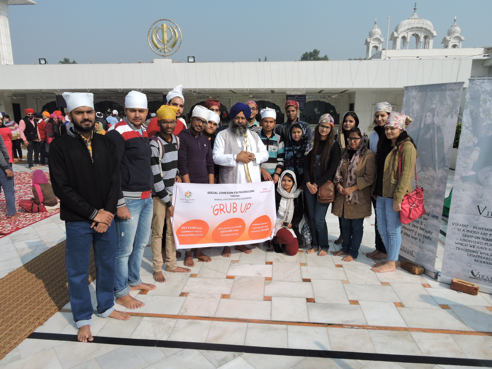
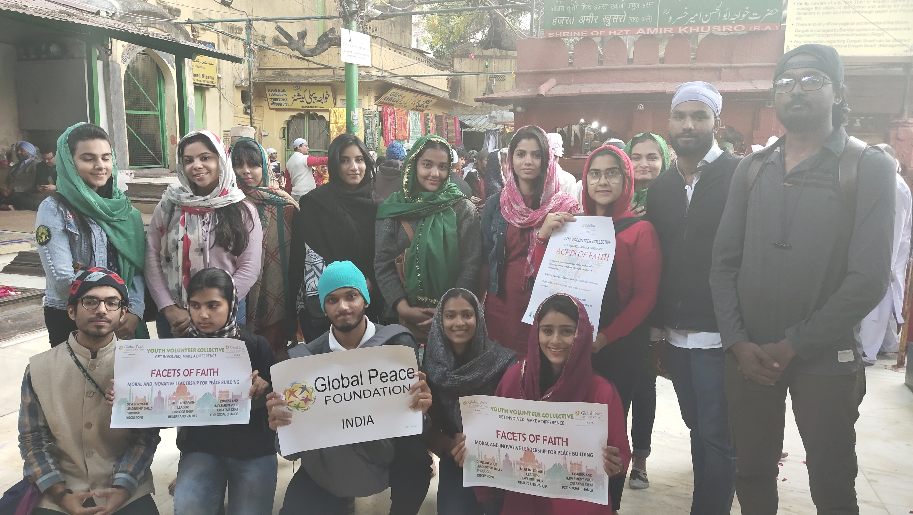

Perceiving the vision
 


 





Facets of Faith is one of the core programs of GPF India. This program in essence combines all the
value-based approaches of the Global Peace Foundation and carries the main message of our founder, Dr.
Hyun Jin Preston Moon, i.e., One Family Under God. Through this program, one gets to know the oneness of
the Human Family, our shared ideals of hope, love, compassion, and concern for everyone, and aims at
promoting social cohesion.
The vision is to bring forth a change in the minds and hearts of people by trying to combine different
fields of knowledge and workforce from the backgrounds of literature, peace, environment, religion,
science, social science, and technology. Thus, youth get a chance to understand the phenomenon of
religion and faith from a holistic perspective. This ensures that civil society becomes the vanguard of
happiness and development for the entire world.